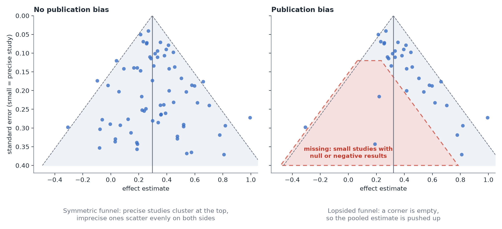

Meta-analysis: bias and pitfalls
In plain terms: pooling studies makes an answer look more solid than any single study, but it cannot fix what is wrong with the studies themselves or with the way they were collected. Most of what can go wrong happens before any statistics.
1. Garbage in, garbage out
A meta-analysis inherits the weaknesses of its studies. If the trials had unblinded outcome assessment, or the studies were observational with uncontrolled confounding, pooling them gives a more precise version of the same bias, with a narrower interval that is more misleading. Don't blend randomized experiments and observational studies into one number without a good reason; if you do, show them separately too. See Experiments vs. observational data.
2. How the studies were found
Theo wants to summarize the trials of a blood-pressure drug. If he includes the ones he happens to know, or stops searching once the answer looks right, the result reflects his choices, not the evidence: this is the garden of forking paths again, at the level of the review. The remedy is procedural: decide the question, the databases, the search terms and the inclusion rules before looking at results, write them down (a protocol), and report how many studies were found, screened and excluded and why. The PRISMA 2020 statement is a checklist for exactly this.
3. Publication bias and small-study effects
Studies with striking results are more likely to be written up and published than studies that found nothing, so the published literature overstates effects (the same mechanism as Type M errors). Two common checks:
- Funnel plot: each study's effect against its precision. Without bias it looks like a symmetric upside-down funnel; a missing corner (small studies with null or negative results) suggests that some studies are missing.
- Egger's regression: a statistical test of that asymmetry.
Both are weak. With fewer than about 10 studies they have little power, and asymmetry can also have other causes (small studies are often run differently from large ones, or on different populations). Use them as a warning light, not as proof either way, and say that the pooled estimate may be too optimistic. Looking for unpublished studies (registries, preprints, contacting authors) is better than any statistical correction.

4. Apples and oranges
If the studies differ in dose, species, population or outcome definition, "the average effect" may describe nothing real. That is what heterogeneity measures, and why the prediction interval matters more than the pooled mean. A meta-regression or subgroup comparison can explore why studies differ (for example by dose), but treat it as exploratory: study characteristics are not randomized, they are tangled with each other, and with few studies there is little power. A relationship across studies (higher average dose, larger average effect) may also not hold within any one study.
5. Studies are not always independent
A meta-analysis assumes each estimate carries separate information. That fails when:
- one study contributes several estimates (two doses against one control, several outcomes), or
- several studies come from the same lab, group, or dataset.
Counting such results as independent makes the interval too narrow, exactly as with clustered data. Choose one estimate per study or model the dependence.
6. Don't count votes
"Seven of ten studies were significant, so it works" ignores both the sizes of the effects and the power of each study. Pool the estimates, not the verdicts.
7. Few studies
With two or three studies, τ² cannot be estimated reliably, and a pooled estimate can mislead more than it clarifies. Say how few studies you have, use the Hartung-Knapp interval or a Bayesian model with a sensible prior for the between-study spread, and consider simply showing the studies side by side.
8. Same data, different problem
If you hold the raw data from every site (every patient, every family), you don't need a meta-analysis: analyze it as clustered data with site as the cluster. That is more flexible, because you can adjust at the individual level. A meta-analysis is for when you only have each study's summary.
A short checklist
- The question and inclusion rules were written down before looking at results.
- The search was systematic, and the number of studies found and excluded is reported.
- Effects are on a common scale and each study's standard error is correct.
- Random effects, with τ, I² and a prediction interval reported.
- A forest plot, a leave-one-out check and a funnel plot were looked at.
- Study quality and publication bias are discussed as limits of the result.